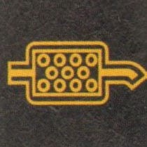

Dizel yakıtın yanması sonucu ortaya su buharı, karbondioksit ve azotdioksit gibi zararsız maddelerin dışında “Karbonmonoksit, hidrokarbonlar ve azot oksit” gibi insan sağlığı ve çevre için son derece zararlı gazlarda çıkmaktadır. Partikül filtresinin amacı çevre ve insan sağlığı için zararlı olan gaz ve partikülleri azaltmaktır.
Euro 5 ve Euro 6 standardına sahip bütün araçlarda partikül filtresi zorunludur.
Euro emisyon standartları, Avrupa Birliği üyesi ülkelerde uygulanan ve egzozdan çıkan zararlı gaz ve partikülleri sınırlandıran bir uygulamadır. Avrupa Birliği üyesi ülkelerde araç satışı yapan bütün otomobil üreticileri bu standartlara uymak zorundadır. (Alman otomobil üreticisi Walkswagen, egzoz emisyon değerlerini manipüle etmesi nedeniyle yüklü miktarda para cezasına çarptırılmıştı.)
Egzozdan çıkan zararlı gazlar, partikül filtresinde tutulur. Ancak filtrede tutulan partiküllerin miktarı zamanla artar ve tıkanmalara yol açabilir. Basınç sensörleri vasıtası ile partikül filtresindeki kurumların seviyesi ölçülür ve filtredeki kritik kurum seviyesi tespit edildiğinde ve uygun koşullar da oluşmuşsa partiküllerin temizleme işlemi başlar. Aracın kendi kendine yaptığı bu temizleme işlemine rejenerasyon nedir.
Rejenerasyon işleminin başlaması; egzozdaki sıcaklığın 600 °C’ye ulaşmasına bağlıdır. Eğer egzozdaki sıcaklık 600 °C’ye ulaşmamışsa filtredeki kurumlar kritik seviyeye gelse dahi rejerenasyon işlemi başlamaz ve partikül filtresi ikaz ışığı yanar. Bu ışık yandığında gaza bastığınız halde aracınız hızlanmaz.

Yukarıdaki uyarı ışığını gördüğünüzde partikül filtresi temizliği yapabilmek için önünüzde 2 seçenek bulunuyor. Bunlardan birincisi aracınızı yarım saat boyunca yüksek devirde kullanmak. Burada önemli olan aracınızı yüksek hızda değil yüksek devirde kullanmak.
3. veya 4. viteste 3000 devirin üzerinde saatte 50 km hızla aracı yarım saat kullanmanız durumunda partiküller temizlenmiş olacaktır. Aracı yüksek hızda kullanmanız durumunda temizleme işlemi yapılmaz.
Eğer aracınızı yarım saat sürdüğünüz halde sorun düzelmemişse aracınızı teknik servise götürün. Teknik serviste aracınıza bilgisayar bağlanarak bilgisayarın talimatlarına uyularak araç kullanılır ve partikül filtresi temizliği tamamlanmış olur.